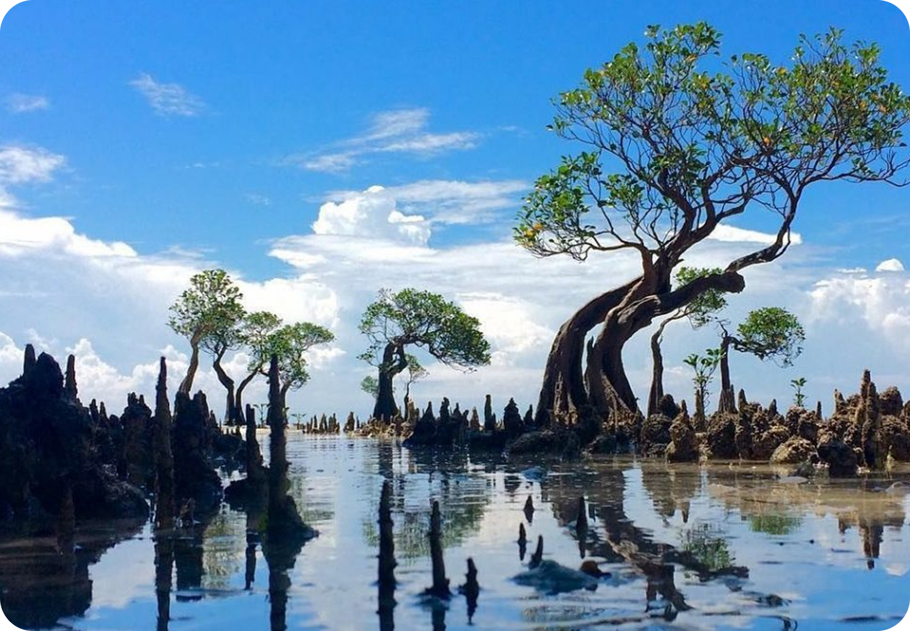
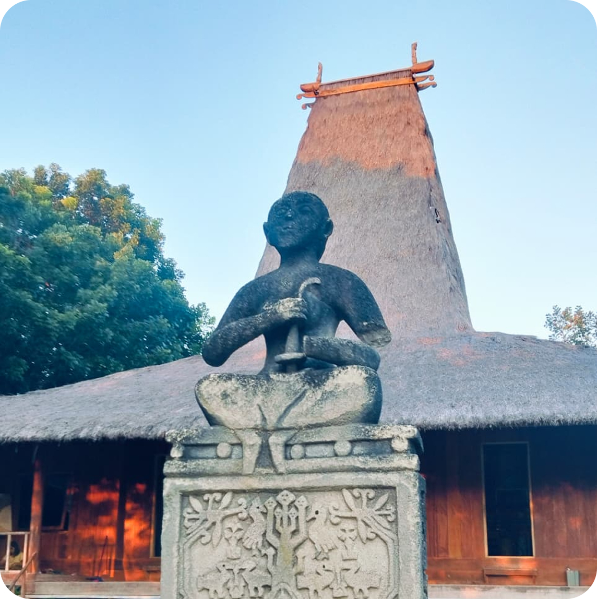
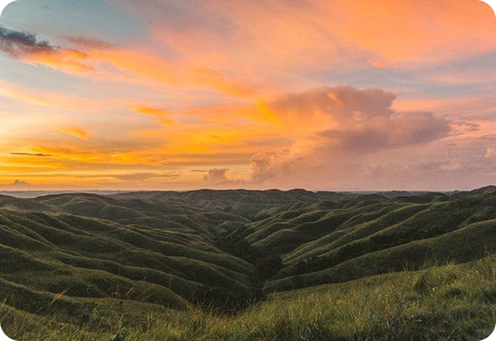
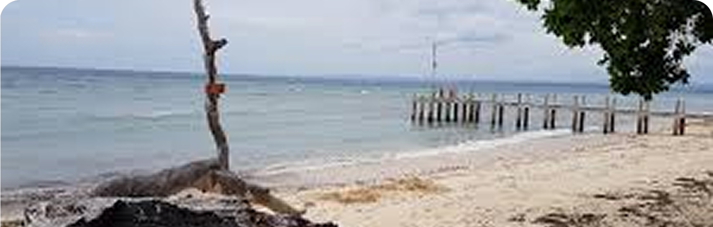
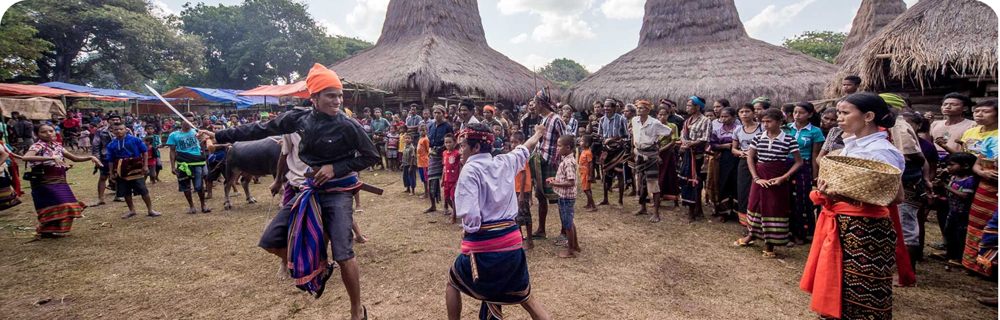
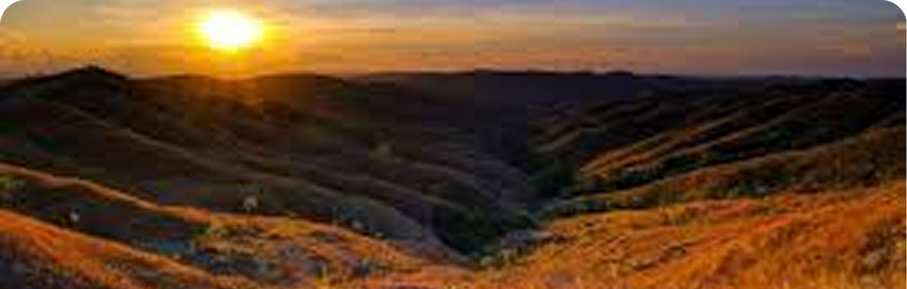

Cari Destinasi
Temukan destinasi wisata atau pengalaman terbaik yang Anda ingin jelajahi.
Temukan destinasi indah, paket wisata terbaik, transportasi, guide lokal, penginapan nyaman, kuliner khas, dan produk lokal autentik dalam satu platform terpercaya.



4 langkah mudah untuk merencanakan perjalanan Anda
Temukan destinasi wisata atau pengalaman terbaik yang Anda ingin jelajahi.
Pilih layanan terbaik sesuai kebutuhan, mulai dari paket wisata hingga transportasi.
Tentukan tanggal perjalanan dan sesuaikan dengan rencana Anda.
Periksa detail, lakukan pembayaran, dan booking perjalanan Anda.
Semua layanan telah diverifikasi dan dipilih secara ketat.
Tim kami siap membantu Anda kapan pun dibutuhkan.
Pembayaran aman dengan sistem yang terpercaya
Kami bekerja sama dengan pelaku wisata Sumba Timur

Wisata alamNikmati keindahan pantai eksotis dan alam yang masih terjaga.
Jelajahi Sekarang ›
BudayaRasakan tradisi, upacara adat, dan kehidupan masyarakat lokal.
Jelajahi Sekarang ›
SunsetTemukan tempat terbaik untuk menikmati senja yang tak terlupakan.
Jelajahi Sekarang ›